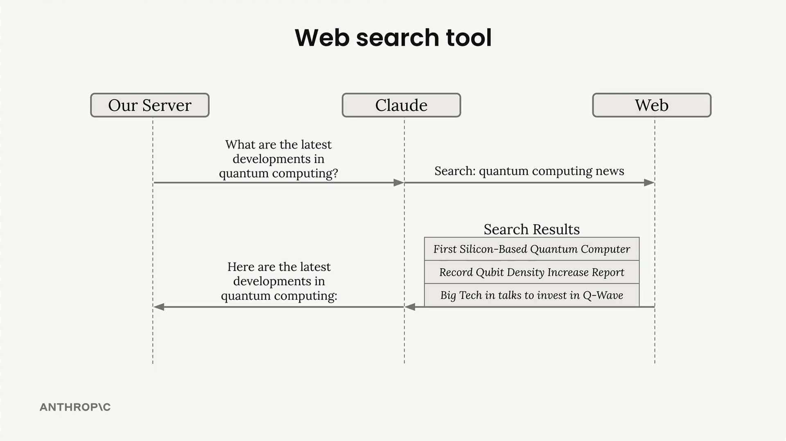
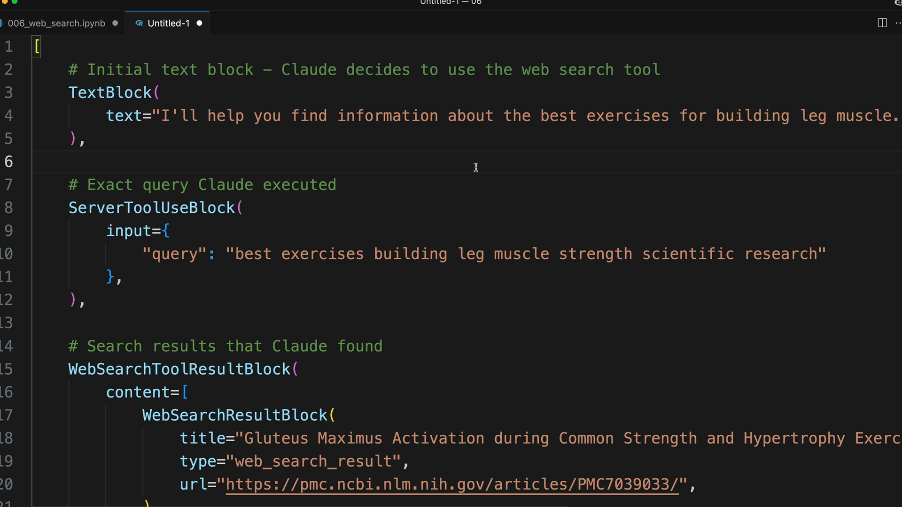
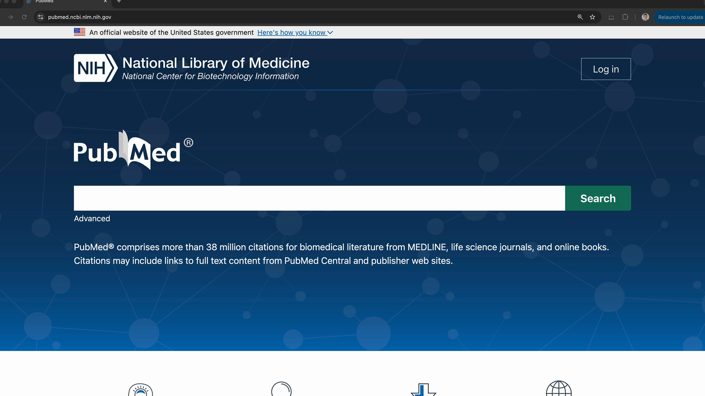
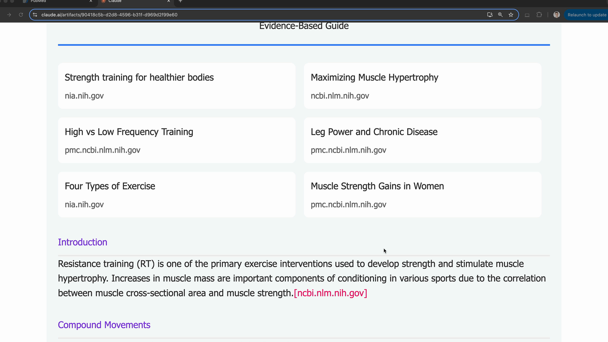

웹 검색 도구
중요 안내: 사용하기 전에 조직의 설정 콘솔에서 웹 검색 도구를 활성화해야 합니다. 이 설정은 여기에서 찾을 수 있습니다: https://console.anthropic.com/settings/privacy
Claude에는 사용자 질문에 답하기 위해 최신 정보나 전문 정보를 인터넷에서 검색할 수 있는 내장 웹 검색 도구가 포함되어 있습니다. 구현을 직접 제공해야 하는 다른 도구와 달리, Claude가 전체 검색 과정을 자동으로 처리합니다. 활성화하려면 간단한 스키마만 제공하면 됩니다.

웹 검색 도구 설정
웹 검색 도구를 사용하려면 다음 필수 필드가 포함된 스키마 객체를 생성합니다:
web_search_schema = {
"type": "web_search_20250305",
"name": "web_search",
"max_uses": 5
}
max_uses 필드는 Claude가 수행할 수 있는 검색 횟수를 제한합니다. Claude가 초기 결과를 바탕으로 후속 검색을 수행할 수 있으므로, 이 필드는 과도한 API 호출을 방지합니다. 단일 검색은 여러 결과를 반환하지만, Claude는 추가 검색이 필요하다고 판단할 수 있습니다.
응답 구조 이해
Claude가 웹 검색 도구를 사용하면 응답에 여러 유형의 블록이 포함됩니다:
- 텍스트 블록 - Claude가 수행 중인 작업에 대한 설명
- ServerToolUseBlock - Claude가 사용한 정확한 검색 쿼리 표시
- WebSearchToolResultBlock - 검색 결과 포함
- WebSearchResultBlock - 제목과 URL이 포함된 개별 검색 결과
- 인용 블록 - Claude의 답변을 뒷받침하는 텍스트

응답 구조를 통해 Claude가 무엇을 검색했는지, 어떤 출처를 찾았는지 정확히 확인할 수 있습니다. 인용에는 Claude가 답변을 뒷받침하기 위해 사용한 특정 텍스트와 출처 URL이 포함됩니다.
검색 도메인 제한
allowed_domains 필드를 사용하여 검색을 특정 도메인으로 제한할 수 있습니다. 신뢰할 수 있는 권위 있는 출처가 필요할 때 특히 유용합니다:
web_search_schema = {
"type": "web_search_20250305",
"name": "web_search",
"max_uses": 5,
"allowed_domains": ["nih.gov"]
}예를 들어, 의학적 조언이나 운동 관련 정보를 질문할 때 PubMed(nih.gov)와 같은 도메인으로 제한하면 임의의 블로그 콘텐츠 대신 근거 기반 정보를 얻을 수 있습니다.

검색 결과 렌더링
응답의 다양한 블록 유형은 특정 UI 렌더링을 위해 설계되었습니다:
- 텍스트 블록을 일반 콘텐츠로 렌더링
- 웹 검색 결과를 상단에 출처 목록으로 표시
- 출처 도메인, 페이지 제목, URL, 인용 텍스트를 포함하여 인용을 텍스트와 함께 인라인으로 표시

이 구조는 사용자가 Claude가 어떻게 답변에 도달했는지 이해하는 데 도움을 주고, 사용된 출처에 대한 투명성을 제공합니다. 인용 형식은 어떤 특정 정보가 어떤 출처에서 왔는지 명확히 하여 AI 응답에 대한 신뢰를 구축합니다.
실용적 활용
웹 검색 도구는 다음과 같은 경우에 가장 효과적입니다:
- 시사 및 최근 동향
- Claude의 학습 데이터에 없는 전문 정보
- 팩트 체크 및 권위 있는 출처 찾기
- 최신 정보가 필요한 리서치 작업
API를 호출할 때 tools 배열에 스키마를 포함하기만 하면, Claude가 웹 검색이 사용자의 질문에 도움이 될 때를 자동으로 판단합니다.